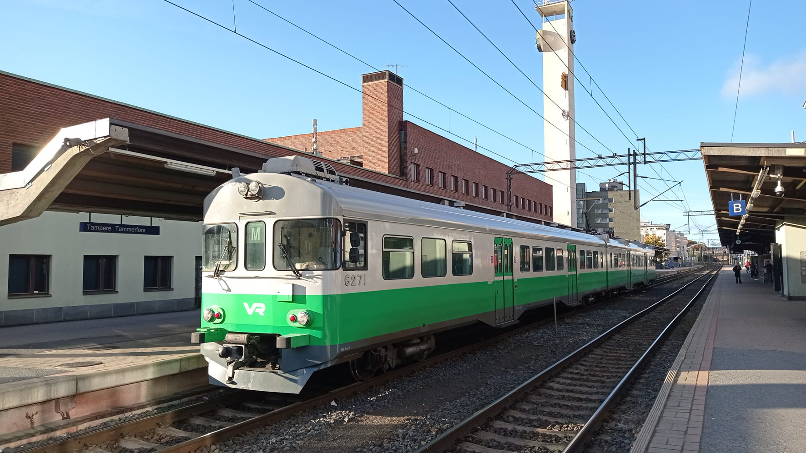
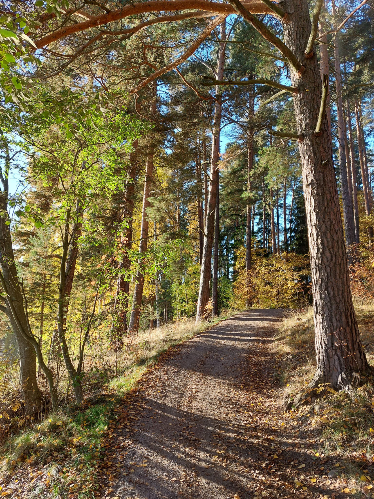
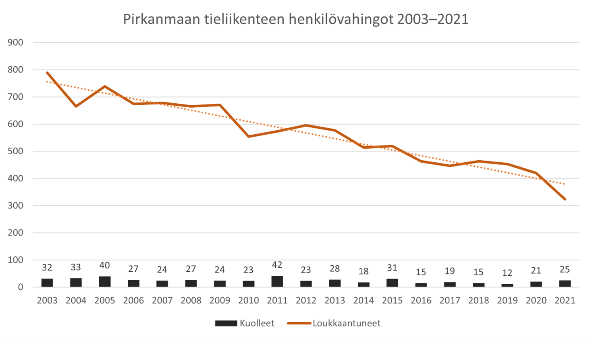
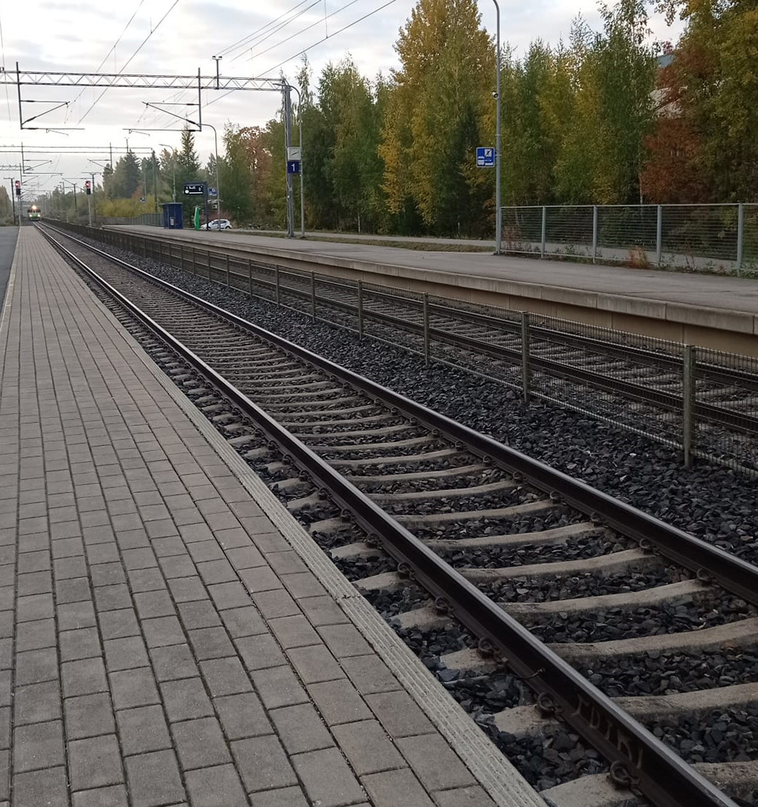

OSIOT

PÄÄVÄYLÄT
Pirkanmaan ylimaakunnalliset yhteydet, suuret kehittämishankkeet sekä edunvalvontatavoitteet


ARJEN LIIKKUMINEN
Jokapäiväisen liikenneympäristön kehittäminen

MATKAILU JA VAPAA-AIKA
Kausiluontoisuuden ja yksilöllisen liikkumisen Pirkanmaa

SEURANTA
Suunnitelman toteutuminen ja liikennejärjestelmän tilannekuva

TOIMEENPANO
Miten strateginen suunnitelma toimeenpannaan käytännössä